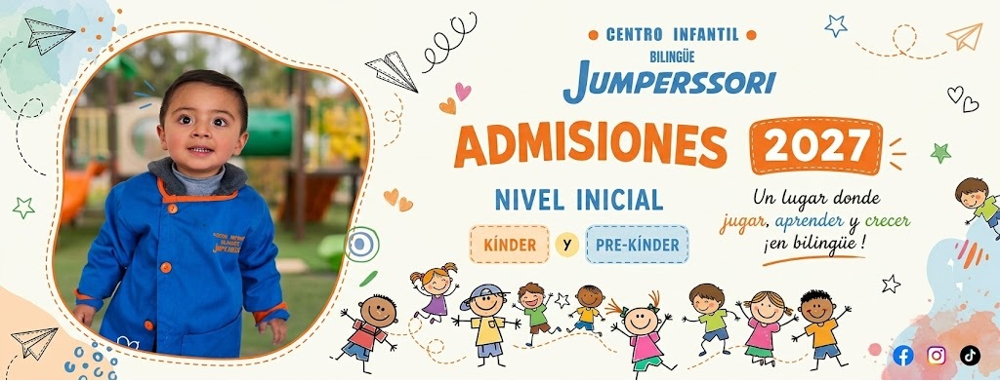

Sala de
Psicomotricidad
Movimiento, equilibrio y coordinación del cuerpo, jugando y gastando energía con propósito.
Un centro infantil cálido y seguro, inspirado en Montessori: desde bebés hasta pre-kínder y kínder, en español e inglés, con cámaras en vivo para las familias.
“Espacio para crecer, libertad para aprender”
Un nivel para cada etapa, de la guardería al kínder, siempre en español e inglés.

Nivel inicial bilingüe en Ciudad Satélite, El Alto. Los cupos por sala son limitados: agenda una visita y te mostramos los espacios.
Somos el Centro Infantil Bilingüe Jumperssori, en Ciudad Satélite, El Alto, y abrimos nuestras puertas el 21 de septiembre de 2023. Acompañamos a cada niña y niño en sus primeros años con una propuesta inspirada en Montessori, en español e inglés, y con las puertas abiertas a las familias.
Creemos que los primeros años se viven jugando, explorando y sintiéndose seguros. Por eso cuidamos cada detalle: los espacios, el equipo y la comunicación diaria con casa.
“Espacio para crecer, libertad para aprender.”
Brindar a cada niña y niño un espacio cálido y seguro donde aprenden jugando, en dos idiomas, desarrollando su autonomía, creatividad y confianza.
Ser el centro infantil bilingüe de referencia en El Alto, reconocido por formar niños felices, seguros de sí mismos y listos para la escuela.
Respeto, cariño, autonomía, curiosidad y confianza con las familias.
Las actividades son a través del juego, el movimiento, los cuentos y la experiencia con los sentidos.
Movimiento, equilibrio y coordinación del cuerpo, jugando y gastando energía con propósito.
Ambientes preparados al estilo Montessori, con materiales al alcance de cada niño.
Espacios seguros para jugar, compartir y descubrir con amigos.
Canciones, juegos y rutinas en inglés para aprenderlo de forma natural.
Lectura de cuentos y conversación para enriquecer el lenguaje y la imaginación.
Pintura, manualidades y música para expresarse y desarrollar la motricidad fina.
Las familias con acceso aprobado ven las cámaras de la sala de su hijo/a en tiempo real desde el Portal Jumperssori.
Actividades, aprendizaje y cuidado.
Atención e información para familias.
Te respondemos el lunes por WhatsApp.
Ofrecemos jornada de mañana, de tarde o completa. Consúltanos por WhatsApp cuál se adapta mejor a tu familia.
Lee lo que opinan otras familias en Google o, si ya eres parte, cuéntanos tu experiencia: nos ayuda a que más familias nos encuentren.
Fotos del día a día, novedades y actividades.
Tres niveles según la etapa: Nido (bebés y primeros pasos, con estimulación temprana), Parvulario (juego, exploración y autonomía) y Preparatorio (lenguaje, lógica y confianza para empezar la escuela).
Las dos cosas: recibimos desde bebés en Nido (guardería con estimulación temprana) hasta la etapa de pre-kínder y kínder en Preparatorio, siempre en español e inglés.
De lunes a viernes de 8:00 a 18:30 y los sábados de 10:00 a 12:30. Ofrecemos jornada de mañana, de tarde o completa; consúltanos por WhatsApp cuál se adapta a tu familia.
En la Av. Satélite 649, Ciudad Satélite, El Alto (La Paz, Bolivia). Ver cómo llegar en Google Maps →
Sí, las admisiones 2027 para pre-kínder y kínder están abiertas. Escríbenos por WhatsApp para reservar una visita y conocer los cupos.
El inglés y el español están integrados al juego y a la rutina diaria: los niños incorporan los dos idiomas de forma natural, con una propuesta inspirada en Montessori — ambientes preparados, materiales a su alcance y adultos que acompañan sin imponer.
Sí. Las familias con acceso aprobado ven las cámaras de la sala de su hijo/a en vivo, de forma privada y segura, desde el Portal Jumperssori.
Escríbenos por WhatsApp al +591 75322827, llámanos o usa el formulario de abajo, y coordinamos un recorrido por nuestros espacios.
Ven a conocer nuestros espacios y cuéntanos sobre tu peque. Estamos para acompañarte.
Te esperamos en Ciudad Satélite, El Alto.